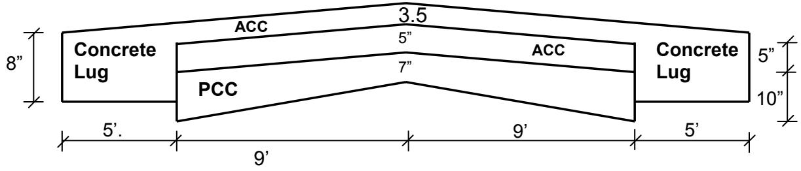
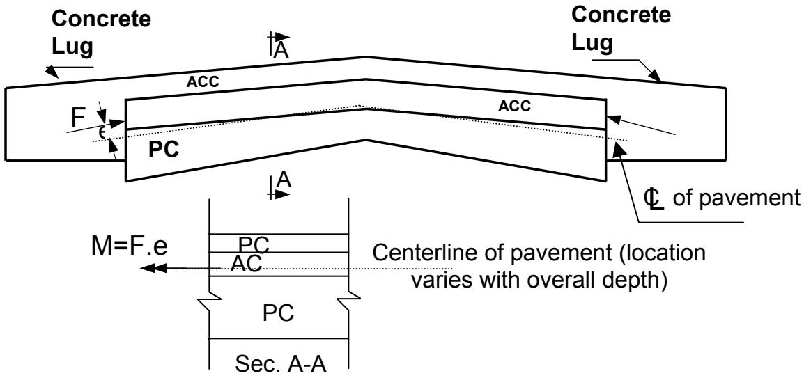
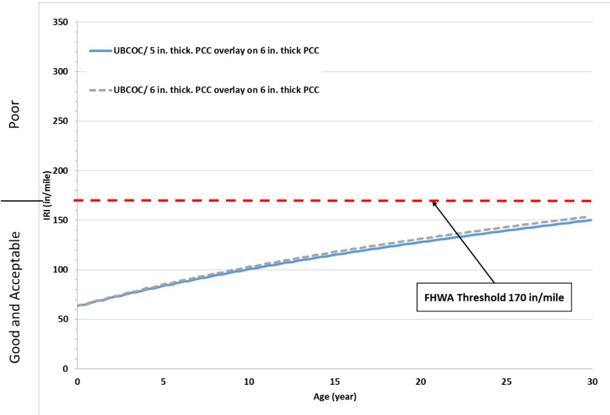
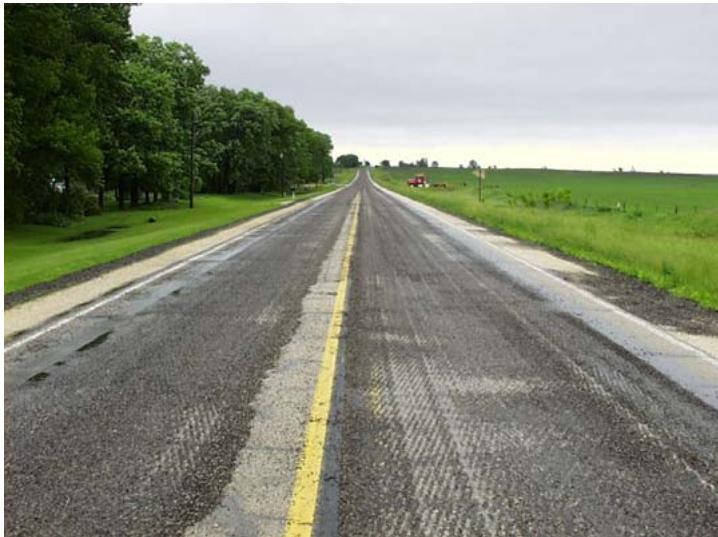
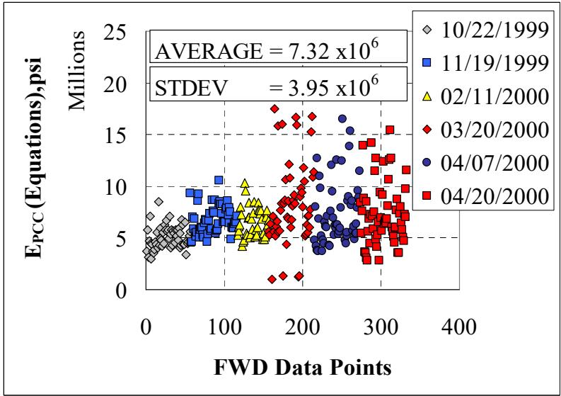
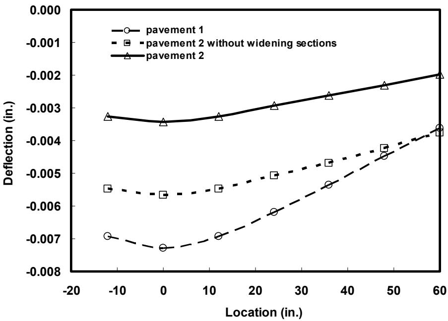
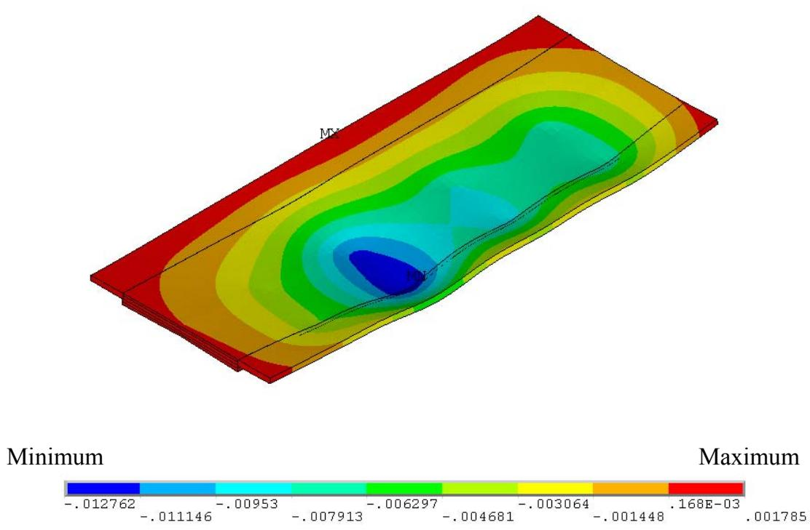
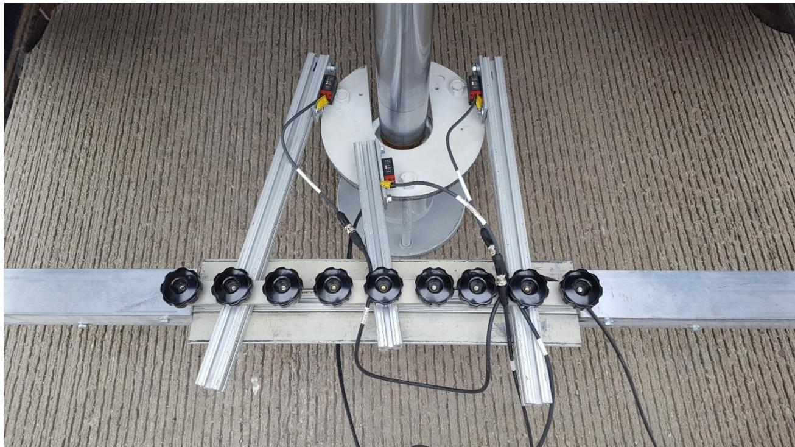
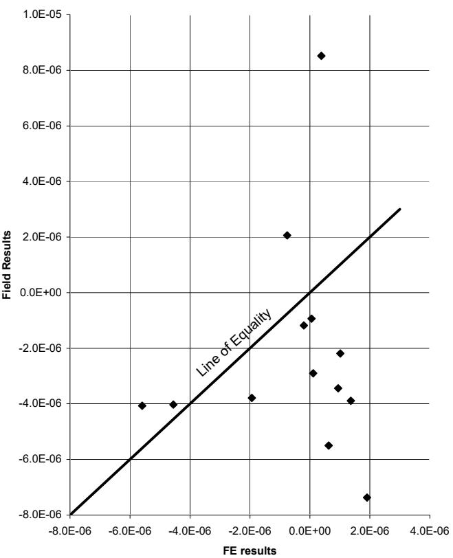

Composite Pavement
A pavement structure consisting of a portland cement concrete (PCC) base layer with an asphalt cement concrete (ACC) surface layer. Common in Iowa where original PCC pavements (designed for 20-year life) were later widened and resurfaced with ACC. Thin unbonded PCC overlays placed on composite pavements provide a longer-life, lower-life-cycle-cost alternative to continued asphalt overlays. [1]
Sources (10)
Classification: Bonded vs. Unbonded Overlays
Concrete overlays on composite pavements are categorized as bonded concrete overlays on asphalt (BCOA) or unbonded concrete overlays on asphalt (UBCOA), with the Iowa DOT distinguishing between them based on overlay thickness: overlays of 6 inches or less are classified as bonded, while those exceeding 6 inches are considered unbonded. [2]
These unbonded overlays can be efficiently placed over composite pavements, such as a 6-inch PCC layer with a 3-inch asphaltic concrete overlay, to extend service life while mitigating reflective cracking through the use of a bond breaker [1].

Schematics of the Composite Pavement (Not to Scale) [1]Structural Behavior and Mechanical Properties
The addition of two 5-foot-wide concrete widening units along the edges of the original pavement provides lateral confinement to the arch action, reducing maximum deflection from 0.00765 inches to 0.00347 inches under falling weight deflectmeter testing [1]. Direct shear tests on composite pavement cores reveal that the weak point in the system typically occurs at an asphaltic concrete lift line located 1 inch or more below the surface, with test values showing large variance due to coring skill and pavement temperature conditions [3]. Furthermore, the bonding degree between layers significantly influences deflection profiles in composite pavements; using erroneous values for this parameter during backcalculation can lead to unrealistic and meaningless results [4].

Schematic Showing Forces Acting on Composite Pavement, Effect of Crack (Joint) Depth [1]Mechanistic-empirical design models indicate that thin concrete overlays (4-inch to 6-inch) placed on existing asphalt pavements are predicted to achieve a longer service life before reaching an International Roughness Index (IRI) threshold of 170 in./mi compared to unbonded concrete overlays on existing concrete pavements [5]. Analytical simulations using Pavement ME Design software demonstrate that 5-inch to 6-inch thick unbonded concrete overlays on 6-inch thick existing concrete perform well with a service life of approximately 30 years before reaching the IRI threshold, regardless of whether transverse joint spacing is set at 12-foot, 15-foot, or 20-foot intervals [5].

20-foot joint spacing concrete overlays Pavement ME Design predicted IRI values versus age: UBCOC [5]Direct shear testing of composite pavements often reveals that the weakest point in the system is located at an asphaltic concrete lift line situated one inch or more below the surface [3].

Scarified pavement surface [3]Modeling and Backcalculation Techniques
Analytical models calibrated with field data estimate the modulus of elasticity for the asphalt cement concrete (ACC) layer at approximately 650,000 psi, while assuming a compressive strength of 4,500 psi for the whitetopping overlay [6]. To determine these mechanical properties from deflection data, the DIPLOMAT analysis program is utilized [7], and specifically, DIPLOBACK serves as a neural network-based backcalculation program designed to determine the mechanical properties of composite pavement systems [7]. Artificial neural network models trained with DIPLOMAT solutions can rapidly backcalculate the elastic moduli of asphalt cement concrete and portland cement concrete layers in composite pavements, providing a nondestructive alternative to traditional core-based testing methods [4]. These ANN-based models can predict the radius of relative stiffness and tensile stresses at the bottom of the PCC layer with average absolute average errors (AAE) of less than 0.5% and 0.2%, respectively, enabling rapid structural assessment from falling weight deflectometer data [4].

PCC layer elastic modulus predictions using: (a) RGD-EPCC-(4) ANN model, and (b) Closed-form equations [4]Furthermore, the Bonded Concrete Overlay of Asphalt Mechanistic-Empirical (BCOA-ME) design procedure calculates required overlay thickness based on maximum allowable percentages of cracked slabs and incorporates input variables for fiber type and content, unlike standard Pavement ME Design which does not model predicted performance for these overlays [5].
 12-foot joint spacing concrete overlays using BCOA-ME design predicted thickness versus maximum allowable percentage of cracked slabs [5]
12-foot joint spacing concrete overlays using BCOA-ME design predicted thickness versus maximum allowable percentage of cracked slabs [5]
Finite element modeling of composite pavements indicates that adding widening units reduces maximum deflection by 60 percent compared to sections without these units, due to confinement provided by soil along the road sides [1].

Comparison between Field and Analytical Results for Pavement 2 without the Two Widening Units (FWD Applied Near the Edge) [1]Increasing the pavement crown from two percent to three percent has an insignificant effect on reducing deflections or stresses induced in the overlay layers [1], whereas doubling the soil modulus, representing seasonal changes between spring and fall, reduces pavement deflection by 40 percent [1].

Note: Negative sign indicates downward deflection. Figure D.9. Deformed Shape of Pavement 2 under Truckload Shown in Figure D.7 (Deflection Is Magnified) [1]Loading, Strain, and Deformation Characteristics
During static load tests on composite pavements, strain measurements typically range between -10 and 10 microns, although discrepancies with analytical models often arise from localized soil property variations or strain gage installation errors [6]. For composite pavements with unbonded overlays, faulting measurements over 4.5-foot and 6.0-foot panels range from -0.04 to +0.06 inches, following a sinusoidal pattern that moves from positive to negative values over time [3]. To quantify the composite resilient modulus of unbonded concrete overlays, cyclic automated plate load testing (APLT) can be utilized with a 12-inch diameter rigid loading plate by applying five cyclic stress levels ranging between 50 and 150 psi for 250 cycles at each test point [8]. This method provides in situ elastic modulus measurements that better represent true field stiffness values compared to dynamic load pulses [8]. Furthermore, the permanent strain behavior of composite pavement layers under repeated loading can be modeled using power model relationships where regression coefficients depend on specific material and stress conditions; this mechanistic approach allows for the assessment of long-term cyclic loading performance by simulating vehicle-loading conditions expected during the service life [8].

12 in. diameter plate setup with reference beam for plate deflection measurements [8]Surface deformation characteristics under cyclic loading are influenced by multiple variables, including overlay thickness, original pavement thickness, foundation layer mechanistic properties, overlay age, and overall pavement condition, requiring a statistically valid assessment of at least 8 to 12 test points for each of these different conditions [8]. Additionally, high-speed inertial profiling systems can characterize slab curling and warping by applying second-generation curvature index (2GCI) curve-fitting models to longitudinal profiles, which allows for the calculation of a Curvature IRI that isolates roughness caused solely by thermal and moisture gradients [9]. Such curling and warping induced by diurnal temperature gradients can cause IRI fluctuations as high as 30 in./mi within a single day, representing a significant contributor to overall pavement roughness beyond traffic-induced deterioration [9].
 Curling and warping behavior of concrete pavement slabs [9]
Curling and warping behavior of concrete pavement slabs [9]
Strain gage data from field tests on composite pavements show that peak strain readings during static load tests can be approximated using trend-lines fitted to continuous recordings as a test truck drives over instrumented cores [6].

Comparison of experimental and analytical strain results [6]Two-Lift Construction Methods and Configurations
A two-lift configuration featuring a three-inch top lift on a nine-inch base lift, with dowels embedded in the bottom layer, demonstrated high durability with 23 of 33 test sections remaining in service without maintenance costs [10]. The most effective construction sequence involved placing the bottom lift using a spreader box and finishing the top lift with a slip-form paver [10]. To ensure distinct layer properties are maintained in the final pavement structure, waiting between 30 to 60 minutes before placing the second lift helps prevent the mixing of two different concrete qualities [10].
Slurry Coat Bond Breaker Limitations
In composite pavements, slurry coats used as bond breakers between existing PCC layers and unbonded overlays have been found unsuccessful, leading to longitudinal cracking in subsequent overlay sections [1]. Conversely, non-woven geotextile fabric interlayers, such as HATE B 500-PP or Tencate Mirafi 1450 BB, can be substituted for asphalt concrete layers to act as bond breakers while potentially enhancing drainage due to their high permeability characteristics [8]. These fabrics are typically installed with a thickness of about 0.1 inches and overlapped by no more than 6 inches at the centerline [8]. The presence of a geotextile separation layer between the concrete overlay and underlying composite pavement significantly reduces structural contribution from the base, resulting in backcalculated effective thicknesses closer to design values compared to sections without such interlayers [9]. Drainage characteristics of these interlayers can be quantified in situ using the core hole permeameter (CHP) test device, which requires a 6-inch diameter core, or the rapid air permeameter test (APT) device, which requires a 14-inch diameter core; these tests directly measure the permeability of geotextile fabric versus asphalt concrete interlayers [8].
 Images show (a) peeled back geotextile and (b) close-up view of fibers bonded to concrete [8]
Images show (a) peeled back geotextile and (b) close-up view of fibers bonded to concrete [8]
Construction Management and Field Implementation
To assist in overlay planning, random coring at selected distressed and good-performing transverse joints, wheel paths, and mid-panel/quarter points is required to determine layer stability and potential delamination between ACC or ACC/PCC layers [6]; if debonding or delamination is found between ACC layers or at the ACC/PCC interface via coring, complete removal of the ACC layer and replacement with a one-inch ACC bond breaker should be considered to ensure good performance and reduce reflective cracking potential [6].
 Partial separation at widening unit–composite section interface (cross-section view—exaggerated scale) [6]
Partial separation at widening unit–composite section interface (cross-section view—exaggerated scale) [6]
Iowa Recycled Composite Pavement Case Study
In Iowa, recycled composite pavement was successfully processed into a two-lift concrete base by separating the original asphalt overlay and incorporating approximately 40% reclaimed asphalt into the new concrete mix; this experimental section utilized nine inches of recycled base course combined with four inches of conventional virgin concrete placed immediately behind it [10].
Other applications focus on surface characteristics and material properties. Alabama DOT has explored two-lift paving as an alternative to traditional asphalt and single-lift concrete to combat low skid numbers caused by locally available limestone aggregates that polish over time, proposing a design featuring a 9-inch lower lift using local limestone and a 4-inch top lift utilizing non-wearing rock such as granite or quartzite [10]. Additionally, in Michigan, a European two-lift system was employed in 1994 to place high-quality aggregate in the top lift specifically for creating an exposed aggregate surface designed to reduce traffic noise [10].
 Two-lift paving in Austria (Source: http://www.walter-heilit-vwb.de/english/toechterg/wien.htm) [10]
Two-lift paving in Austria (Source: http://www.walter-heilit-vwb.de/english/toechterg/wien.htm) [10]
Related
References
- J. K. Cable, M. L. Anthony, F. S. Fanous, and B. M. Phares, "Evaluation of Composite Pavement Unbonded Overlays: Phases I and II," Center for Portland Cement Concrete Pavement Technology, Iowa State University, Ames, IA, Rep. TR-478, 2003. [Online]. Available: https://www.intrans.iastate.edu/research/completed/evaluation-of-composite-pavement-unbonded-overlays-phase-iii-tr-478-hr-1093-proj-2/
- J. Gross, D. King, D. Harrington, H. Ceylan, Y. A. Chen, S. Kim, P. Taylor, and O. Kaya, "Concrete Overlay Performance on Iowa's Roadways (Field Data Report)," National Concrete Pavement Technology Center, Ames, IA, Rep. TR-698, 2017. [Online]. Available: https://www.intrans.iastate.edu/wp-content/uploads/2017/09/Iowa_concrete_overlay_performance_w_cvr.pdf
- J. K. Cable, J. L. Morud, and T. R. Tabbert, "Evaluation of Composite Pavement Unbonded Overlays: Phase III," CTRE, Iowa State University, Ames, IA, Rep. TR-478, 2006. [Online]. Available: https://rosap.ntl.bts.gov/view/dot/24065
- H. Ceylan, A. Guclu, M. B. Bayrak, and K. Gopalakrishnan, "Nondestructive Evaluation of Iowa Pavements, Phase 1," CTRE, Iowa State University, Ames, IA, Rep. CTRE 04-177, 2007. [Online]. Available: https://www.intrans.iastate.edu/wp-content/uploads/2018/03/nde-pavements.pdf
- J. Gross, D. King, H. Ceylan, Y. A. Chen, and P. Taylor, "Optimized Joint Spacing for Concrete Overlays with and without Structural Fiber Reinforcement," National Concrete Pavement Technology Center, Ames, IA, Rep. TR-698, 2019. [Online]. Available: https://www.intrans.iastate.edu/wp-content/uploads/2019/06/optimized_joint_spacing_for_overlays_w_cvr.pdf
- J. K. Cable, F. S. Fanous, H. Ceylan, D. Wood, D. Frentress, T. Tabbert, S. Y. Oh, and K. Gopalakrishnan, "Design and Construction Procedures for Concrete Overlay and Widening of Existing Pavements," Center for Portland Cement Concrete Pavement Technology, Iowa State University, Ames, IA, Rep. TR-511, 2005. [Online]. Available: https://www.intrans.iastate.edu/wp-content/uploads/2018/03/oreo_design.pdf
- B. M. Phares, H. Ceylan, R. Souleyrette, O. Smadi, and K. Gopalakrishnan, "Development of a High Speed Rigid Pavement Analyzer – Phase I Feasibility and Need Study," National Concrete Pavement Technology Center, Ames, IA, Rep. TPF-5(136), 2008. [Online]. Available: https://www.intrans.iastate.edu/wp-content/uploads/2018/03/high_speed_pvmt_analyzer_w_cvr.pdf
- D. J. White and P. Taylor, "Automated Plate Load Testing on Concrete Pavement Overlays with Geotextile and Asphalt Interlayers: Poweshiek County Road V-18," National Concrete Pavement Technology Center, Ames, IA, 2018. [Online]. Available: https://www.intrans.iastate.edu/wp-content/uploads/2018/04/Powashiek_CR_V-18_APL_testing_w_cvr.pdf
- D. King, B. Yang, P. Taylor, and H. Ceylan, "Field Performance of Fiber-Reinforced Concrete Overlays," Institute for Transportation, Iowa State University, Ames, IA, Rep. TR-816, 2025. [Online]. Available: https://www.intrans.iastate.edu/wp-content/uploads/2025/05/field_performance_of_frc_overlays_w_cvr.pdf
- J. K. Cable and D. P. Frentress, "Two-Lift Portland Cement Concrete Pavements to Meet Public Needs," Center for Transportation Research and Education, Iowa State University, Ames, IA, Rep. DTF61-01-X-00042 (Project 8), 2004. [Online]. Available: https://www.intrans.iastate.edu/wp-content/uploads/2020/10/two_lift.pdf
Feedback on this page